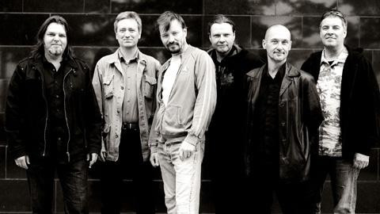

Kolmas nainen on suomalaisen musiikkitaivaan kirkkaimpia tähtiä. He ovat tehneet huomattavan vaikutuksen paitsi 1980-luvulla myös myöhemmillä vuosikymmenillä. Yhtyeen omaperäinen tyyli, joka yhdistelee taidokkaasti pop-rockia ja post-punkia, on ansainnut heille paikan suomalaisten sydämissä. Pauli Hanhiniemen karismaattinen laulu yhdistettynä taitaviin kitarariffeihin, Janne Lounatvuoren basson voimakas läsnäolo, sekä Janne Savolaisen rumpujen tahdikas komppi muodostavat yhtyeen tunnistettavan äänimaiseman. Kolmas nainen on tunnettu hienoista melodioista ja syvällisistä sanoituksistaan, jotka resonoivat kuulijan kanssa.

Kolmas nainen perustettiin vuonna 1982, ja he nousivat nopeasti suuren yleisön tietoisuuteen. Yhtye tuli tunnetuksi energisestä live-esiintymisestään ja omaperäisestä musiikistaan. Erityisesti 1980-luvun puolivälissä yhtyeen suosio kasvoi, ja he saavuttivat "rockin Suomen mestaruuden" monien fanien ja kriitikoiden silmissä.
Yhtyeen ensimmäinen single, "Hyvää ja kaunista", julkaistiin vuonna 1984 ja se toi heille laajaa tunnustusta. Kappaleesta tuli nopeasti hitti, ja se on edelleen yksi Kolmas nainen -fanien suosikkikappaleista.
Seuraavat vuodet toivat mukanaan lisää menestystä, ja yhtye jatkoi aktiivista keikkailua sekä albumien julkaisemista.
Yhtyeen vaikutus suomalaiseen musiikkiin on jatkunut vuosien varrella, ja heidän musiikkinsa on edelleen tärkeä osa suomalaista pop-rock-perinnettä. Kolmas nainen on yksi niistä harvoista yhtyeistä, jotka ovat jääneet pysyvästi suomalaisten sydämiin.
Yhtyeen paluu 2010-luvulla oli kuin odotettu juhla faneille, ja he ovat jatkaneet musiikillista matkaansa vahvalla otteella. Kolmas nainen on jättänyt pysyvän jäljen suomalaiseen musiikkikulttuuriin, ja heidän musiikkinsa on ajaton, aina yhtä koskettava ja inspiroiva. Suomalainen musiikkiskene saa olla ylpeä Kolmas nainen -nimisestä helmestään!